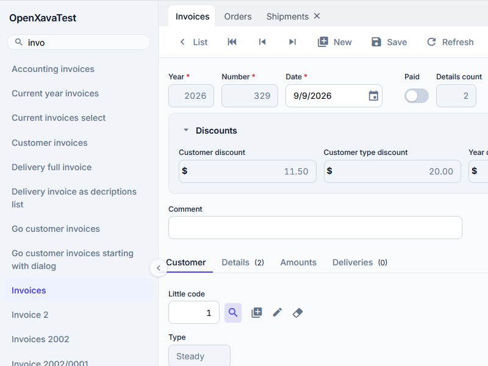
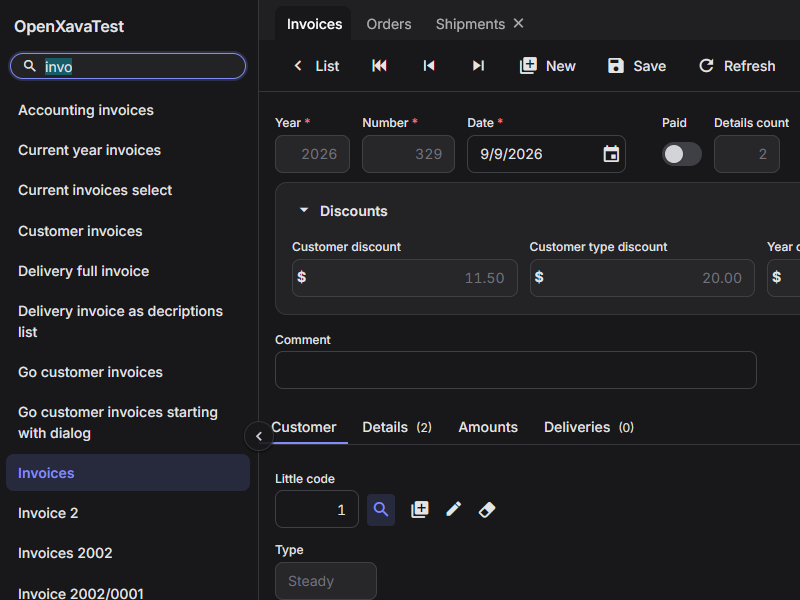
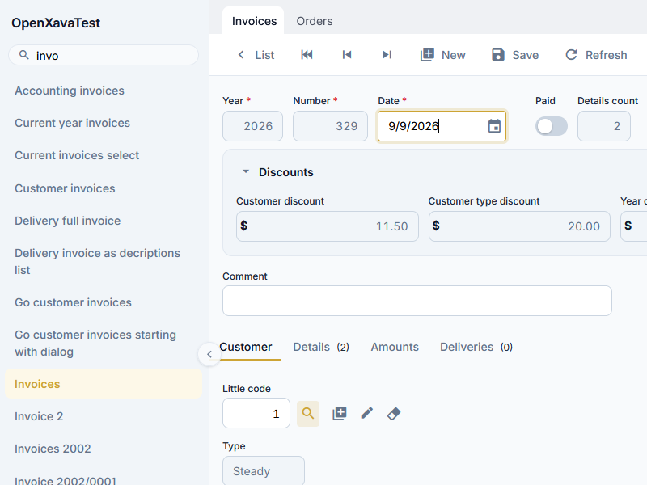
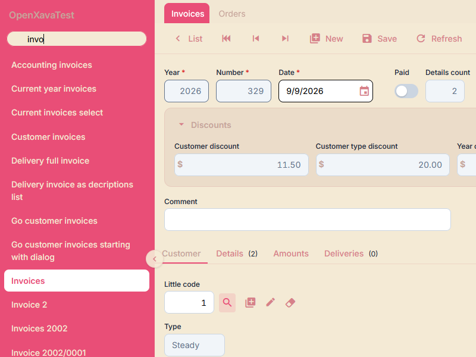
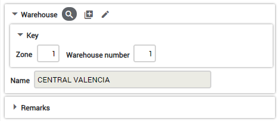
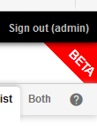
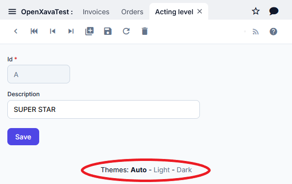

OpenXava 8.0 includes three visual styles. The default one is Auto, which automatically switches between light and dark according to the operating system preference (prefers-color-scheme). You can also force Light or Dark explicitly:


To choose one, edit the xava.properties file from the properties folder of your project and set the value for the styleCSS entry:
# Visual style
# styleCSS=auto.css # Default: follows OS preference
# styleCSS=light.css
styleCSS=dark.css
If you don't specify a styleCSS entry, auto.css is used by default.
To create a new style just create your own CSS file in src/main/webapp/xava/style folder of your project and point to it in the styleCSS property of xava.properties.
If you want a slight modification over an existing style, you can extend that style. Look at the CSS for the available styles in GitHub. For example, if you want the Light style but with a gold accent color for the primary buttons, focus rings and hover states, create a golden.css file in src/main/webapp/xava/style with this content:
/* golden.css */
@import 'light.css';
:root {
--accent-color: #cda434;
--accent-color-hover: #b8902a;
--accent-soft: #fdf8e8;
}
Note that we use @import 'light.css' to extend the Light style. We just redefine --accent-color and its companion variables. This single change affects the primary buttons, focus rings, hover states, the switch component, the calendar accent and the module menu selection. Now change the styleCSS value in xava.properties:
styleCSS=golden.cssTo get this result:

On the other hand, to define your own color scheme, not just a refinement, extend directly from base.css. For example, to define a Pink style create a pink.css like this:
/* pink.css */
@import 'base.css';
:root {
--my-pink: #E94E77;
--my-dark-pink: #D68189;
--my-beige: #F4EAD5;
--my-brown: #C6A49A;
/* Brand */
--accent-color: var(--my-pink);
--accent-color-hover: var(--my-dark-pink);
--accent-soft: #fce4ec;
/* Modules left menu */
--modules-list-color: var(--my-beige);
--modules-list-background: var(--my-pink);
--modules-list-selected-color: white;
/* Backgrounds & labels */
--background: var(--my-beige);
--color: var(--my-brown);
/* Frames */
--frame-background: rgba(198, 164, 154, 0.2);
--frame-border: var(--my-dark-pink);
/* Actions */
--action-color: var(--my-dark-pink);
--action-hover-color: var(--my-pink);
--action-hover-background: white;
}
Note as we extend from base.css and define the brand color and the colors for the main parts of the interface. Just with the above code you'll get:

You define just a few colors and all the other colors are derived from those, therefore you have a consistent color scheme with little effort. Moreover, you have the option to define individually the color for each single part of the interface, look at the base.css file to see all the CSS variables available, more than 200.
The simplest way to customize the visual style of your application is to redefine --accent-color. This single variable controls the primary buttons, focus rings, hover states, the boolean switch, the calendar accent, the module menu selection and more. You just need to add a few lines to the custom.css file of your project (see below) or create your own theme extending light.css or dark.css:
:root {
--accent-color: #0d9488; /* Your brand color */
--accent-color-hover: #0f766e; /* A darker variant for hover */
--accent-soft: #f0fdfa; /* A very light tint for hover backgrounds */
}
Three variables are enough: --accent-color for the main accent, --accent-color-hover for the hover state (usually a darker shade), and --accent-soft for subtle hover backgrounds (a very light tint of the accent color).
OpenXava 8.0 uses a design token system defined in base.css. All tokens are CSS custom properties (variables) that you can override in your own CSS. The main token groups are:
Look at the base.css file to see all the tokens available.
But not only the colors, you can refine each single aspect of the interface: margins, fonts, borders, etc. For example, if you want the frames to have less rounded corners and a subtle shadow, you can add these lines to your CSS:
.ox-frame {
border-radius: var(--radius-sm);
box-shadow: var(--elevation-1);
}
So now the frames are displayed in this way:

You can modify any aspect of the user interface, have a look at base.css to see all the available options. Of course, if you're going to change many things an option is to define your own CSS from scratch, without extending base.css.
You can add and modify styles for your application with the file custom.css in src/main/webapp/xava/style. This affects only your application. This is a fast way to change the visual style without creating a new theme.
To overwrite an existing style just add the style name and define it in your custom.css file. If you put:
body {
font-size: 13px;
}
.ox-list-pair, .ox-list-odd {
height: 36px;
}
You change the font-size to all your application and the height of the rows in list. Look at base.css for a complete list of available CSS classes.
Here are a couple of CSS tricks/tips.
Style @ReadOnly fields uniquely
input[disabled] {
background: black;
color: white;
}
Note that in element collections read-only fields are rendered as plain elements, not as disabled inputs, so this selector only applies to form fields in detail mode.
Add row-xxx to @Tab
Sometimes, you will want to extend the existing "row-highlight" styling in the @Tab definition. Here's a way to add, say, "row-red" with hovering as a different color.
tr.row-red {
background: red;
}
tr .row-red:hover {
background: yellow;
}
Remove the Application and Module display between Main Menu and body (frees screen real estate)
#module_description {
display: none;
}
Remove checkboxes from list-mode display
.ox-list-header input[type="checkbox"] {
display: none;
}
.ox-list-pair input[type="checkbox"] {
display: none;
}
.ox-list-odd input[type="checkbox"] {
display: none;
}
Remove checkboxes from a specific module
The above changes are global across your application. You can make them specific to a module by including the Application and Module names as part of the string. For example, my Application name is: KitBase and I have a module named Dashboard. Because Dashboard's list is a list of Collections, my entry in custom.css looks like this:
.ox_KitBase_Dashboard__collection_scroll input[type="checkbox"] {
display: none;
}
If it were a standard list of properties, the entry would look like this:
.ox_KitBase_Dashboard__list_scroll input[type="checkbox"] {
display: none;
}
*Note the double underscore between the module name and the rest of the string!*
Change background color of list-mode hover
.ox-list-pair:hover, .ox-list-odd:hover {
background: var(--list-row-hover-background);
}
If you want to add your own elements to the page in order they are always present in your application, you can do it in src/main/webapp/naviox/indexExt.jsp of your project, you should create the naviox folder and the indexExt.jsp file. It is included at the end of the page, but using CSS you can place it in any part of the screen.
For example, if you want to show a BETA sign in right top corner, thus:

You can write in your indexExt.jsp:
BETA
Then place it adding the next code in the custom.css:
#beta {
position: absolute;
right: -65px;
top: 5px;
color: white;
font-size: 120%;
font-weight: bold;
transform: rotate(45deg);
background: red;
padding: 50px 50px 5px 50px;
z-index: -10;
}
The user has the option of choosing the style to use for himself with a theme chooser on bottom of the page:

In order to determine the available themes you have to enumerate them in the themes property of xava.properties:
themes=auto.css, light.css, dark.css
If you want to remove the theme chooser completely just define themes as empty, or just don't define it:
# Empty to disable theme chooser
themes=